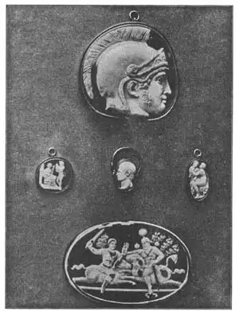

40
TINY TREASURES
宝石小雕

“WHERE your treasure is, there will your heart be also.”
I once read a description of a group of sculptured figures that had been made for a public building. The chief thing the newspaper said about the sculpture was that it weighed ten tons. It did not say whether the statues were beautiful or not— just that they weighed ten tons. It might have been ten tons of coal. But mere size doesn’t make a thing beautiful. The Greeks made some huge statues, but they were beautiful. They made, also, tiny sculptured figures so small that you have to look at them under a magnifying glass to see how really beautiful they are.
Not long ago I saw in a museum a piece of such sculpture that couldn’t have weighed more than an ounce and was no larger than a domino. It was a piece of colored stone through which the light shone and it was carved with beautiful figures of Greek gods and goddesses in low relief. The figures had been cut into the stone with very fine but sharp tools. It had been made by some Greek sculptor whose name no one knows— before Christ was born. It was called a gem, which is the name we give to anything that is very precious though it may be tiny.
In the British Museum in London is a whole room of such gems made before the time of Christ, by sculptors as great as those who made man size and colossal size figures. These gems were made for kings and wealthy people, for no others could afford them. Rich people long ago used to collect such gems as you might collect postage stamps, and museums—and some people who can afford it—do so to-day.
Often these tiny bits of low relief sculpture were cut in a stone that had two or three layers of different colors so that the figures were in one color and the background in another. If one layer was black and the other white, the stone was called onyx. If the top layer was reddish and those below it white and black, it was called sardonyx. Such sculptured low reliefs were known as cameos and some were very beautiful. Nowadays, cameos are made of shells of two color layers and are called shell cameos. Some are cut from two or more layers of different colored stone cemented together or from artificial sardonyx.
It used to be the fashion for ladies to wear shell cameos as breastpins and perhaps your grandmother may have had such a cameo pin with the head of some one cut in it. Some kinds of china have white cameo-like figures on a blue background. Some cameos were cut from glass of two colors. There is a famous vase in the British Museum called the Portland Vase. It is of blue glass and the figures on it in relief are white glass. Many years ago a crazy person, just to show off, knocked over the vase and it was smashed to bits. The bits were all picked up and put together again, and so well was it repaired that you can hardly tell that it was broken.
There was another kind of gem made in great quantities, before Christ, in which the figures were hollowed out or sunken, instead of being raised. A gem of this sort was called a seal or intaglio, which means sunken. The seals were used to stamp a design in wax. Of course the stamped impression made from the sunken relief was raised in wax, and one could make as many stamped impressions with the seal as he liked. Each person who could afford it had such a seal with a special design all his own to stamp everything he wished to mark with his own hand. Every one would then know he alone had made the impression.
The marks made by seals were largely used instead of signatures, back in the days when few people knew how to write—or even how to sign their names. Sometimes the seal was fitted in a finger ring which was worn by the owner so that no one else could use it. Such rings were called signet rings, which means “signing ring.” Sometimes the seal was not mounted in a ring, but was kept in a safe place so that no one but the owner could use it.

No.40 SOME ROMAN CAMEOS（几枚罗马浮雕宝石）
Have you ever collected old coins, old metal money of bronze or silver? Most boys have. Perhaps you would never think of such coins as a kind of sculpture, but that is what old coins are—pieces of low relief sculpture, and the Greeks used to make the most beautiful coins with heads or figures of famous people or gods on them in low relief. First they made a die which was a sunken relief, and then, with this die, coins were stamped out of metal—gold, silver or bronze. One difference between a coin and a gem is that a coin is made from a die and any number of coins all alike can be made from the one die, but there is only one of a gem. The coins of some countries to-day are really beautiful, but none quite so beautiful as those the old Greeks made. One reason for this is that our coins have to be made quite flat, in very low relief, so that they will stack in a pile, for this is necessary in our banks. But it was not necessary to stack the old Greek coins in piles and so they could be made, and were made, in higher relief.
Coins were, of course, used to buy things with, but there were old coin-like sculptures called medals that generally were larger and were not used as money. The figures on medals were often in higher relief and made by pouring the metal into a mold instead of by stamping the metal with a die. Usually such medals were made for prizes in athletic games or honors in war or to celebrate some great event. anniversary, or celebration. Medals of this kind are made to-day, so your father may have one to show you.
【中文阅读】
“你的财宝在哪里，你的心也就在那里”。我曾读一篇报道，介绍了一座公共建筑物的一组雕像。报纸说这组雕像重10吨。报道却没有评说雕像是否美观，只说有10吨重。煤炭堆也可以有10吨重呀。单凭尺寸并不能说明美。古希腊人刻过巨像，而且都很好看。他们也制作一些小雕，有些甚至小到必须拿放大镜才能发现美之所在。
不久前，我在一座博物馆里看到一件这样的小雕。它重不超过1盎司，和多米诺骨牌一般大小。它用彩石制成，能穿透光。石雕上用浅浮刻了许多漂亮的希腊神像。这些图像都是用精细而锋利的工具刻制的。它是公元前一位默默无闻的古希腊雕刻家的作品，称作《宝石》。我们通常把那些非常珍贵的东西称作“宝石”，不管它多么小。
伦敦大英博物馆里有间屋子装满了这种公元前制作的“宝石”。这些“宝石”的雕刻家同那些雕刻真人大小以及巨像的雕刻家一样了不起。这些宝石小雕是专为国王和富人制作的，因为其他人根本付不起这昂贵的价格。很久以前富人们就喜欢收集这种宝石，就像今天的集邮以及博物馆和一些有支付能力的人藏珍一样。
这些刻在石头上的小型浅浮雕通常有两三层不同的色彩，就是说，浮雕上人物是一种颜色，背景又是另一种颜色。如果石头一层是黑色，另外一层是白色，就称作 “黑玛瑙”。如果石头上层是红色，下层是黑白色，就叫“红条纹玛瑙”。有些先从两层或多层不同彩石切割后再进行粘制或从人工条纹玛瑙切割制成。这种浅浮雕被称作浮雕珠宝饰物，有的非常漂亮。今天，人们用双色贝壳制作浮雕珠宝饰物，叫做“贝壳浮雕”。
女士们曾经流行用贝壳浮雕作胸针，或许祖母们就用过刻有头像的胸针呢。有些瓷器在蓝色背景上刻着白色浮雕一样的人物。有些贝壳浮雕用两种不同颜色的玻璃制成。大英博物馆里收藏了一个著名的花瓶，叫“波特兰花瓶”。它用蓝色玻璃制成，上面的浮雕是用白色玻璃刻的。多年前，有个狂人，只为炫耀，把花瓶扔到地上砸成碎片。幸好人们把碎片从地上捡起，重新粘结。修复品很成功，几乎看不出破损。
公元前还有一种“宝石”曾大量生产。宝石上图案呈凹型，而非凸状。这种凹型宝石称作“印章”或“凹雕”。这种印章是用蜡印图案，就是说这些凹型浮雕就凸印在蜡上。人们用印章可以任意印图案。当时，买得起这种印章的人都有一个印有独特图案的印章，可以将任何属于自己的东西盖上章，以供辨识。
过去人们不知如何书写或签名时，这些代替签名的印章就得以大量使用。有时把印章镶在戒指上，主人随身携带，以防他人盗用。这种戒指称作“印章戒指”，意思是“签名的戒指”。有时候又不把印章镶在戒指上，而放在某个安全之处，这样来防止盗用。
你集过旧硬币、旧铜币或银币吗？大多数男孩都集过吧。我们可能从未想过这些硬币是一种雕刻，因为旧硬币的确是一种浅浮雕。古希腊人喜欢用浅浮雕来制作精美的硬币，上刻名人像或神像或头像。他们先做一个刻有浅浮雕的模具，再用模具印出许多金属硬币——金币、银币或铜币。硬币和宝石的一个不同之处在于，硬币是由模具印出的，相同的硬币可以由一个模具印出。但宝石却是独一无二的。今天，有些国家把硬币铸得很漂亮，但还是比不上古希腊人制的硬币。其中一个原因是我们现在的硬币做得太平，图案太浅，应银行之需，便于叠放。但在古希腊，硬币不需要叠放，所以图案可以刻得更深些。
毫无疑问，硬币的作用是购物。但有一种古老的、像硬币一样的雕刻，称作“勋章”，它尺寸更大一些，但不当钱用。勋章上的图案通常是高浮雕，是把金属倒进模子里制成，而不是用模具印出来。这些勋章通常用作体育比赛的奖励，或战争中的立功授勋，或用在大事件、周年纪念或庆典中。今天我们也制作这种勋章，所以你爸爸说不定就有一枚勋章，叫他拿出来给你看看。